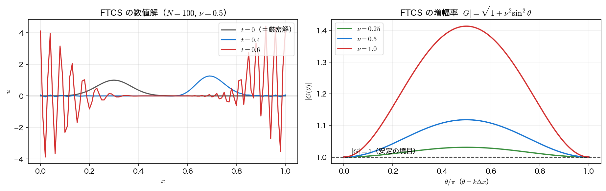
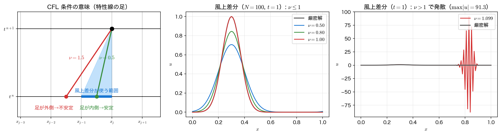

風上差分と CFL 条件
第9回では、時間に前進差分・空間に中心差分を当てた FTCS が拡散方程式の出発点だった。安定条件 \(r\le1/2\) さえ守れば正しく動く、素朴だが実用的な手法である。同じことを移流方程式でやってみよう——というのが本ページの出発点で、そして最初の結論は「まったく動かない」である。
FTCS は無条件不安定
移流方程式 \(\partial_t u+c\,\partial_x u=0\) に、時間の前進差分と空間の中心差分を当てる。
\(u_j^{n+1}\) について解けば
打ち切り誤差は \(O(\Delta t)+O(\Delta x^2)\) で、拡散方程式のときと同じ形をしている。ところが第9回のフォン・ノイマン解析を当てると事情がまるで違う。格子上の波 \(u_j^n=G^n e^{\mathrm{i}\theta j}\)（\(\theta=k\Delta x\)）を代入すると、\(e^{\mathrm{i}\theta}-e^{-\mathrm{i}\theta}=2\mathrm{i}\sin\theta\) より
\(\nu^2\sin^2\theta\ge0\) だから、\(\theta=0,\pi\) を除くすべての波数で \(\lvert G\rvert>1\) である。しかも \(\nu\) をどれだけ小さくしても \(\lvert G\rvert>1\) は変わらない。これを無条件不安定（unconditionally unstable）という。拡散方程式では \(r\) を小さくすれば救えたのに、ここには救いがない。

\(\nu\) を小さくしても救えないことは、指数を数えれば納得できる。1ステップの増幅は \(\lvert G\rvert\approx1+\tfrac12\nu^2\sin^2\theta\)、時刻 \(T\) までのステップ数は \(n_t=T/\Delta t=cT/(\nu\Delta x)\) だから、総増幅率の対数は
\(\nu\) に比例する。\(\nu\) を半分にすれば発散は半分の速さになるが、指数関数的な増大そのものは消えない。実際、\(\nu=0.1\) でも \(t=5\) までには \(\max\lvert u\rvert\) が \(2.1\times10^5\) に達する（実行結果の表）。
風上差分：情報は風上から来る
FTCS が失敗した理由は、増幅率の式ではなく物理にある。移流方程式の解は特性線に沿って運ばれるから、\(c>0\) のとき点 \(x_j\) の次の時刻の値を決めるのは左側（風上）にあった値だけである。ところが中心差分は右側（風下）の \(u_{j+1}\) を同じ重みで使う。まだ来ていない情報を混ぜているのだから、うまくいかないほうが自然である。
そこで、空間微分を風上側の片側差分で置き換える。
\(c>0\) の場合の更新式は
となる。これが1次風上差分（first-order upwind differencing）である。\(c\) の符号によらず書きたければ
とまとめられる。
更新式を並べ替えると、この手法の性格が一目で分かる。
2点の重み付き平均である。\(0\le\nu\le1\) なら重み \(1-\nu\) と \(\nu\) はともに非負で和が \(1\) だから、新しい値は必ず \(u_{j-1}^n\) と \(u_j^n\) の間に入る。したがって
- 新しい極大・極小が生まれない（単調性）
- 初期値が \(0\le u\le1\) ならその範囲を出ない
- 全変動 \(\mathrm{TV}=\sum_j\lvert u_{j+1}-u_j\rvert\) が増えない（TVD 性）
が保証される。第9回の \(r\le1/2\) が3点の重み付き平均だったのとまったく同じ論法で、そして同じくその重みが非負である範囲が安定範囲になる。
フォン・ノイマン解析でも同じ結論が出る。\(u_j^n=G^ne^{\mathrm{i}\theta j}\) を代入して
絶対値の2乗を整理すると（\(1-\cos^2\theta=(1-\cos\theta)(1+\cos\theta)\) を使う）
\(1-\cos\theta\ge0\) なので、\(\lvert G\rvert\le1\) となる条件は \(\nu(1-\nu)\ge0\)、すなわち
である。重み付き平均の議論とぴったり一致した。
CFL 条件
得られた条件
を CFL 条件（Courant–Friedrichs–Lewy condition, 1928）と呼ぶ。単に「クーラン条件」ということも多い。文字通りに読めば「1ステップで波が1格子より多く進んではいけない」ということだが、より本質的な言い方がある。
時刻 \(t^{n+1}\) の点 \(x_j\) における真の解は、\(x_j-c\Delta t\) にあった値そのものである。一方、差分式が参照するのは \(x_{j-1}\) と \(x_j\) だけ——つまり数値解の依存領域は区間 \([x_{j-1},x_j]\) に限られる。特性線の足 \(x_j-c\Delta t\) がこの区間の外に出てしまえば、数値解は答えを決めるのに必要な情報を一度も見ていないことになる。どんな巧妙な差分式でも、見ていない情報から正しい答えを作ることはできない。

拡散方程式の安定条件と並べると、双曲型の性格がよく見える。
| 拡散方程式（第9回） | 移流方程式（第11回） | |
|---|---|---|
| 陽解法の安定条件 | \(\Delta t\le\dfrac{\Delta x^2}{2\alpha}\) | \(\Delta t\le\dfrac{\Delta x}{c}\) |
| \(\Delta x\) を半分にすると | \(\Delta t\) は \(1/4\)、ステップ数は 4倍（総計算量は8倍） | \(\Delta t\) も半分、ステップ数は 2倍（総計算量は4倍） |
| 制限の性格 | \(O(\Delta x^2)\) ＝厳しい | \(O(\Delta x)\) ＝穏やか |
| 陰解法を使う動機 | 強い（半離散系が硬い） | 弱い |
拡散方程式では安定条件が精度の要求よりはるかに厳しく、そのために陰解法が必要だった。移流方程式の CFL 条件はそこまできつくない。しかも「1ステップで波が1格子以上進んではいけない」というのは精度の観点からも自然な要求で、\(\nu\) を \(1\) より大きくしたところで得るものは少ない。移流の計算で陽解法が主流であり続けている理由がここにある。
陰解法にすれば CFL 条件は外れるが
移流方程式にも陰解法（時間後退＋空間中心差分など）は作れて、無条件安定にできる。ただし波の位置を正しく追うには結局 \(\nu\lesssim1\) が必要で、無条件安定の御利益は拡散方程式ほど大きくない。CFL 条件は「安定性の制約」であると同時に「精度の要求」でもある、というのが双曲型の特徴である。
\(\nu=1\) の特別な意味
\(\nu=1\) を風上差分に代入すると、更新式は
——配列を1つずらすだけになる。これは「1ステップで波がちょうど1格子ぶん進む」設定だから、格子と特性線が完全に一致し、数値解は厳密解に一致する。増幅率も \(\lvert G\rvert^2=1-2\cdot1\cdot(1-1)\cdot(1-\cos\theta)=1\) で、減衰も位相のずれもない。実行結果の表で \(\nu=1.0000\) の行だけ最大誤差が \(2.1\times10^{-21}\)（丸め誤差の水準）になっているのはこのためである。
もっとも、これは1次元・等速・等間隔格子という特権的な状況でしか成り立たない。\(c\) が場所や時間によって変わる現実の問題では、すべての格子点で \(\nu=1\) を実現することはできず、安全のために \(\nu\) を \(0.5\) 程度に取るのが普通である。すると次ページで見るとおり、\(\nu\) を \(1\) から遠ざけた分だけ数値拡散が効いてくる。
サンプルコード
FTCS の発散、\(\nu\) を変えても救えないこと、風上差分の CFL 条件を1本にまとめる。1ステップの更新は手法ごとに関数 ftcs_adv_step・upwind_step に切り出し（ftcs_adv_step は第9回の拡散方程式の ftcs_step と区別するための名前）、solve には呼ぶ関数を引数 step で渡す。関数を引数で渡す書き方は第7回の撃ち抜き法の rhs と同じである。次ページ以降のサンプルと演習では upwind_step を1文字も変えずに写し、新しい手法も同じ引数の1ステップ関数として足していく。格子点の数 \(N\) は引数で決まるので、解の配列は malloc で確保する。
#include <stdio.h>
#include <stdlib.h>
#include <math.h>
/* 第11回 移流方程式(1): FTCS の無条件不安定と1次風上差分の CFL 条件
u_t + c u_x = 0, c = 1, 周期境界 [0,1)
例題1: u(x,0) = exp(-100 (x-0.3)^2)（ガウス波）
領域の長さが 1 で c = 1 なので t = 1 でちょうど1周し、
厳密解は初期波形そのものになる。 */
static const double CADV = 1.0; /* 移流速度 c */
static double u_gauss(double x) { return exp(-100.0*(x - 0.3)*(x - 0.3)); }
/* FTCS（空間中心差分）1ステップ: un_j = u_j - (nu/2)(u_{j+1} - u_{j-1}) */
static void ftcs_adv_step(int N, double nu, const double u[], double un[])
{
for (int j = 0; j < N; j++) {
int jm = (j - 1 + N) % N, jp = (j + 1) % N; /* 周期境界 */
un[j] = u[j] - 0.5*nu*(u[jp] - u[jm]);
}
}
/* 1次風上差分（c > 0）1ステップ: un_j = u_j - nu (u_j - u_{j-1}) */
static void upwind_step(int N, double nu, const double u[], double un[])
{
for (int j = 0; j < N; j++) {
int jm = (j - 1 + N) % N; /* 周期境界 */
un[j] = u[j] - nu*(u[j] - u[jm]);
}
}
/* 1ステップ関数 step で時刻 T まで積分し、max|u| と厳密解（= 初期波形）からの最大誤差を返す。
fp != NULL なら最終波形を書き出す（FTCS は時刻、風上差分は nu で区別する）*/
static void solve(int N, double nu_req, void (*step)(int, double, const double *, double *),
double T, double *maxabs, double *err, int *nt_out, double *nu_out,
FILE *fp)
{
double dx = 1.0/N;
int nt = (int)(T/(nu_req*dx/CADV) + 0.5); /* ちょうど T に着地させる */
if (nt < 1) nt = 1;
double dt = T/nt;
double nu = CADV*dt/dx;
double *u = malloc(N * sizeof(double));
double *un = malloc(N * sizeof(double));
for (int j = 0; j < N; j++) u[j] = u_gauss(j*dx);
for (int n = 0; n < nt; n++) {
step(N, nu, u, un);
for (int j = 0; j < N; j++) u[j] = un[j];
}
double m = 0.0, e = 0.0;
for (int j = 0; j < N; j++) {
double d = fabs(u[j] - u_gauss(j*dx));
if (fabs(u[j]) > m) m = fabs(u[j]);
if (d > e) e = d;
}
*maxabs = m; *err = e; *nt_out = nt; *nu_out = nu;
if (fp) {
double tag = (step == ftcs_adv_step) ? T : nu;
for (int j = 0; j <= N; j++) /* j = N は周期境界の折り返し */
fprintf(fp, "%.4f %.10e %.10e %.10e\n",
tag, j*dx, u[j % N], u_gauss(j*dx));
}
free(u);
free(un);
}
/* 増幅率 |G(theta)| の最大値を theta = 0..pi の走査で求める（step は FTCS か風上差分） */
static double max_gain(double nu, void (*step)(int, double, const double *, double *))
{
double gmax = 0.0;
for (int i = 0; i <= 2000; i++) {
double th = 3.14159265358979323846*i/2000.0, g2;
if (step == ftcs_adv_step) g2 = 1.0 + nu*nu*sin(th)*sin(th);
else g2 = 1.0 - 2.0*nu*(1.0 - nu)*(1.0 - cos(th));
if (g2 > gmax) gmax = g2;
}
return sqrt(gmax);
}
int main(void)
{
double m, e, nu;
int nt;
printf("=== 例題1: u_t + u_x = 0, ガウス波 exp(-100(x-0.3)^2), 周期境界 ===\n");
printf("N = 100 (dx = 0.01), t = 1 で1周するので 厳密解 = 初期波形\n\n");
FILE *ff = fopen("advection_ftcs.dat", "w"); /* 作図用 */
if (ff == NULL) { perror("advection_ftcs.dat"); return 1; }
fprintf(ff, "# t x u u_exact\n");
printf("--- FTCS（時間前進・空間中心差分）, nu = 0.5 ---\n");
printf(" t max|u|\n");
for (int i = 1; i <= 5; i++) {
double T = 0.2*i;
solve(100, 0.5, ftcs_adv_step, T, &m, &e, &nt, &nu, ff);
printf(" %.1f %12.4e\n", T, m);
}
fclose(ff);
printf(" 理論の最大増幅率 |G|max = %.6f (> 1)\n\n", max_gain(0.5, ftcs_adv_step));
printf("--- FTCS は時間刻みを小さくしても救えない ---\n");
printf(" nu t=1 t=3 t=5 |G|max\n");
for (int i = 0; i < 3; i++) {
double nur[] = {0.5, 0.2, 0.1};
double a[3];
for (int k = 0; k < 3; k++) { solve(100, nur[i], ftcs_adv_step, 1.0+2.0*k, &m, &e, &nt, &nu, NULL); a[k] = m; }
printf(" %.1f %11.4e %11.4e %11.4e %.6f\n",
nur[i], a[0], a[1], a[2], max_gain(nur[i], ftcs_adv_step));
}
printf("\n");
printf("--- 1次風上差分: CFL 条件 nu = c dt/dx <= 1 ---\n");
printf(" nu 刻み数 max|u| 最大誤差 |G|max 判定\n");
double nul[] = {0.5, 0.8, 0.9, 1.0, 1.1, 1.2};
FILE *fu = fopen("advection_upwind.dat", "w"); /* 作図用 */
if (fu == NULL) { perror("advection_upwind.dat"); return 1; }
fprintf(fu, "# nu x u u_exact\n");
for (int i = 0; i < 6; i++) {
solve(100, nul[i], upwind_step, 1.0, &m, &e, &nt, &nu, fu);
printf(" %.4f %5d %10.4e %10.4e %.6f %s\n",
nu, nt, m, e, max_gain(nu, upwind_step), (e < 1.0 ? "安定" : "発散"));
}
fclose(fu);
printf("\n nu = 1 では風上差分は厳密（1ステップでちょうど1格子ぶん平行移動する）\n");
/* 作図用: 増幅率 |G(theta)| の曲線 */
FILE *fg = fopen("advection_gain.dat", "w");
if (fg == NULL) { perror("advection_gain.dat"); return 1; }
fprintf(fg, "# nu theta |G|_ftcs |G|_upwind\n");
double nug[] = {0.5, 0.2, 0.1};
for (int i = 0; i < 3; i++)
for (int k = 0; k <= 200; k++) {
double th = 3.14159265358979323846*k/200.0;
double gf = 1.0 + nug[i]*nug[i]*sin(th)*sin(th);
double gu = 1.0 - 2.0*nug[i]*(1.0 - nug[i])*(1.0 - cos(th));
fprintf(fg, "%.2f %.10e %.10e %.10e\n", nug[i], th, sqrt(gf), sqrt(gu));
}
fclose(fg);
return 0;
}
コンパイル・実行:
実行結果
=== 例題1: u_t + u_x = 0, ガウス波 exp(-100(x-0.3)^2), 周期境界 ===
N = 100 (dx = 0.01), t = 1 で1周するので 厳密解 = 初期波形
--- FTCS（時間前進・空間中心差分）, nu = 0.5 ---
t max|u|
0.2 1.1108e+00
0.4 1.2644e+00
0.6 4.4245e+00
0.8 2.6281e+02
1.0 2.0652e+04
理論の最大増幅率 |G|max = 1.118034 (> 1)
--- FTCS は時間刻みを小さくしても救えない ---
nu t=1 t=3 t=5 |G|max
0.5 2.0652e+04 2.6582e+23 5.1604e+42 1.118034
0.2 1.2491e+00 1.6775e+07 5.0997e+15 1.019804
0.1 1.1019e+00 1.0126e+01 2.1439e+05 1.004988
--- 1次風上差分: CFL 条件 nu = c dt/dx <= 1 ---
nu 刻み数 max|u| 最大誤差 |G|max 判定
0.5000 200 7.0689e-01 2.9311e-01 1.000000 安定
0.8000 125 8.4510e-01 1.5490e-01 1.000000 安定
0.9009 111 9.1365e-01 8.6352e-02 1.000000 安定
1.0000 100 1.0000e+00 2.1049e-21 1.000000 安定
1.0989 91 9.1300e+01 9.1300e+01 1.197802 発散
1.2048 83 1.2946e+07 1.2946e+07 1.409639 発散
nu = 1 では風上差分は厳密（1ステップでちょうど1格子ぶん平行移動する）
読み取るべき点が3つある。
- FTCS は最初のうち「動いているように見える」。 \(t=0.2\) の \(\max\lvert u\rvert=1.1108\) は、ガウス波が少し尖っただけに見える。\(t=0.6\) で \(4.42\)、\(t=1.0\) で \(2.07\times10^4\) ——指数関数的増大の初期は緩やかなので、短時間の計算だけで手法の正しさを判断してはいけない。\(\nu=0.1\) の行はその極端な例で、\(t=1\) の時点では \(1.1019\) と無害に見えるのに \(t=5\) では \(2.1\times10^5\) になっている。
- 風上差分は \(\nu\le1\) で \(\lvert G\rvert_{\max}=1\) ちょうど。 安定の限界ぎりぎりで踏みとどまっており、\(\nu>1\) になった途端に \(1.197802\) へ跳ね上がる。\(\nu=1.0989\) の 91 ステップで \(1.1978^{91}\approx4\times10^{6}\) 倍——実測 \(91.3\) が控えめなのは、この最悪モードの初期振幅が小さいからにすぎない。
- \(\nu\) が \(1\) から離れるほど誤差が大きい。 \(\nu=1\) で \(2\times10^{-21}\)、\(\nu=0.9009\) で \(8.6\times10^{-2}\)、\(\nu=0.5\) では \(2.9\times10^{-1}\) ——ピーク値が \(0.707\) まで下がっている。安定なのに解が「消えていく」。これは発散とは別種の失敗であり、次ページの主題である。
可視化
advection.c は3つのファイルを書き出す。advection_ftcs.dat（1列目 \(t\)、以下 \(x\)、数値解、厳密解）は FTCS の波形が時刻とともに壊れていく様子、advection_upwind.dat（1列目 \(\nu\)、以下同じ）は \(t=1\) での風上差分の波形、advection_gain.dat（1列目 \(\nu\)、2列目 \(\theta\)、3・4列目 FTCS と風上差分の \(\lvert G\rvert\)）は増幅率の曲線である。
import numpy as np
import matplotlib.pyplot as plt
ft = np.loadtxt("advection_ftcs.dat") # 列: t, x, u, u_exact
up = np.loadtxt("advection_upwind.dat") # 列: nu, x, u, u_exact
gn = np.loadtxt("advection_gain.dat") # 列: nu, theta, |G|ftcs, |G|upwind
# --- 図1: FTCS は無条件不安定 ---
fig, (ax1, ax2) = plt.subplots(1, 2, figsize=(11, 4.2))
for t in np.unique(ft[:, 0])[:3]: # t = 0.2, 0.4, 0.6 まで
s = ft[ft[:, 0] == t]
ax1.plot(s[:, 1], s[:, 2], lw=1.3, label=f"$t = {t:g}$")
s = ft[ft[:, 0] == ft[0, 0]]
ax1.plot(s[:, 1], s[:, 3], "k--", lw=1.0, label="exact")
ax1.set_xlabel("$x$")
ax1.set_ylabel("$u$")
ax1.set_title("FTCS ($N = 100$, $\\nu = 0.5$)")
ax1.grid(alpha=0.3)
ax1.legend(fontsize=9)
for nu in np.unique(gn[:, 0]):
s = gn[gn[:, 0] == nu]
ax2.plot(s[:, 1] / np.pi, s[:, 2], lw=1.4, label=f"$\\nu = {nu:g}$")
ax2.axhline(1.0, color="k", ls="--", lw=1.0)
ax2.set_xlabel("$\\theta / \\pi$")
ax2.set_ylabel("$|G(\\theta)|$")
ax2.set_title("FTCS: $|G| > 1$ for every $\\nu$")
ax2.grid(alpha=0.3)
ax2.legend(fontsize=9)
fig.tight_layout()
fig.savefig("ftcs_unstable.png", dpi=150)
# --- 図2: 風上差分と CFL 条件 ---
fig, (ax1, ax2) = plt.subplots(1, 2, figsize=(11, 4.2))
nus = np.unique(up[:, 0])
for nu in nus[nus <= 1.0]:
s = up[up[:, 0] == nu]
ax1.plot(s[:, 1], s[:, 2], lw=1.4, label=f"$\\nu = {nu:g}$")
s = up[up[:, 0] == nus[0]]
ax1.plot(s[:, 1], s[:, 3], "k--", lw=1.0, label="exact")
ax1.set_xlabel("$x$")
ax1.set_ylabel("$u(x,\\,1)$")
ax1.set_title("upwind, $\\nu \\leq 1$: stable but smeared")
ax1.grid(alpha=0.3)
ax1.legend(fontsize=9)
for nu in nus[nus > 1.0]:
s = up[up[:, 0] == nu]
ax2.plot(s[:, 1], s[:, 2], lw=1.4, label=f"$\\nu = {nu:g}$")
ax2.set_yscale("symlog", linthresh=1.0)
ax2.set_xlabel("$x$")
ax2.set_ylabel("$u(x,\\,1)$")
ax2.set_title("upwind, $\\nu > 1$: CFL violated")
ax2.grid(alpha=0.3)
ax2.legend(fontsize=9)
fig.tight_layout()
fig.savefig("upwind_cfl.png", dpi=150)
plt.show()
実行:
1枚目の左では \(t=0.6\) の曲線が格子1点ごとに跳ねる市松振動に覆われ、右では3本の曲線がどれも \(\lvert G\rvert=1\) の破線より上にある。2枚目の左は \(\nu\) が小さいほどガウス波がなまること（次ページの主題）、右は \(\nu\) が \(1\) をわずかに超えただけで解が桁違いに吹き飛ぶことを示す。本文の図にある特性線と差分の依存領域の作図だけは、計算結果ではなく幾何の説明なのでここには含まれていない。
まとめ
- 移流方程式に FTCS を当てると \(\lvert G\rvert^2=1+\nu^2\sin^2\theta>1\) で、無条件不安定。\(\Delta t\) を小さくしても救えない（総増幅率の指数が \(\nu\) に比例するだけ）。
- 1次風上差分 \(u_j^{n+1}=u_j^n-\nu(u_j^n-u_{j-1}^n)\) は、風上側の情報だけを使う。\((1-\nu)u_j^n+\nu u_{j-1}^n\) という2点の重み付き平均なので、\(0\le\nu\le1\) で単調性・TVD 性が保証される。
- 増幅率は \(\lvert G\rvert^2=1-2\nu(1-\nu)(1-\cos\theta)\)。安定条件は \(0\le\nu\le1\)、すなわち CFL 条件 \(\Delta t\le\Delta x/c\)。
- CFL 条件の本質は「数値解の依存領域が特性線の足を含むこと」。見ていない情報から正しい答えは作れない。
- \(\nu=1\) では風上差分は \(u_j^{n+1}=u_{j-1}^n\) となり厳密。ただし1次元・等速の特権であり、実用では \(\nu<1\) で運用するため数値拡散を避けられない。